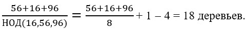
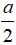
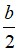
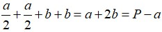
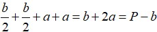
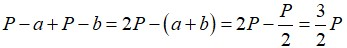
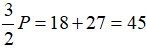
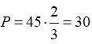
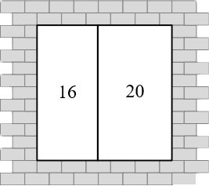

Вдоль прямолинейной аллеи растут четыре дерева. Расстояния между соседними из них равны 56, 16, 96 метрам.
Какое наименьшее число деревьев надо ещё посадить, чтобы расстояния между любыми двумя соседними деревьями были равны между собой?
Нужно посадить деревья так, чтобы расстояние d между соседними деревьями было одно и тоже и являлось наибольшим из возможных (именно в этом случае количество деревьев будет минимальным).
Найди наибольший общий делитель чисел 56, 16 и 96. Отношение длины всей аллеи к найденному НОДу даст общее количество деревьев, которые должны расти вдоль аллеи, чтоб выполнялись условия задачи. К полученному значению необходимо одно дерево, от которого ведется отсчет, и отнять те четыре, что уже растут.

Три года назад Оля была в три раза моложе своего брата Степана, а четыре года назад в четыре раза моложе Степана.
Сколько лет Степану и Оле сейчас?
В ответ запишите произведение полученных значений.
Обозначь через x лет возраст Оли 4 года назад. Тогда четыре года назад возраст Степана равен 4x лет. Через год Оле исполнится x+1 год, а Степану 4x+1 год. Тогда выполняется равенство 3(x + 1) = 4x + 1 откуда находим x = 2.
Итак, четыре года назад Оле было 2 года, а Степану – 8 лет. Значит, сейчас Оле 6 лет, а Степану 12 лет. 6*12=72
В детском магазине есть много интересных игрушек. Среди них на одной полке лежат мишки, куклы, мячики и машинки. Известно, что машинка весит столько же, сколько весит мишка и кукла вместе, а три мячика – столько же, сколько две машинки. Кроме того, мишка весит столько же, сколько весит кукла и мячик вместе.На правую чашу весов положили мишку.
Сколько кукол нужно положить на левую чашу, чтобы весы находились в равновесии?
Согласно условию задачи:
машинка = мишка + кукла
мишка = мячик + кукла
машинка = мячик + 2 куклы
2 машинки = 2 мячика + 4 куклы
Но, по условию: 2 машинки = 3 мячика
Получаем: 2 машинки = 3 мячика= 2 мячика + 4 куклы
1 мячик = 4 куклы
Тогда мишка (равный по весу кукле и мячику вместе) весит столько же, сколько весят вместе 5 кукол.
Часы Васи отстают на 5 минут, но он считает, что его часы спешат на 10 минуты. Часы Пети спешат на 2 минуты, однако он думает, что они отстают на 8 минут. Друзья договорились, что встретиться в 6 часов вечера.
Кто из мальчиков придёт позже и на сколько минут?
Чтобы понять, кто из мальчиков придет позже и на сколько, достаточно определить реальное время в момент прихода каждого. Найдем разницу между реальным временем и тем временем, которое показывают часы Васи. Пусть точное время x минут, тогда на часах Васи x - 5 минут. Так как он думает, что они спешат, значит считает, что сейчас x - 5 - 10 минут. Поэтому значение реального времени на 15 минут больше того, которое представляет себе Вася. Это означает, что к моменту прихода Васи в точку встречи реальное время составит 18 ч 15 мин.
Пусть y минут — реальное время. Тогда часы Пети в этот момент показывают y + 2 минут. Так как он думает, что часы отстают на 8 минут, значит считает, что в этот момент y + 2 + 8 минут. Поэтому значение реального времени на 10 минут меньше, чем думает Петя.
Это значит, что к моменту прихода Пети реально 17 ч 50 мин.
Значит Вася пришел позже Пети на 25 минут.
Кассир продал все билеты в первый ряд кинотеатра, причем по ошибке на одно из мест было продано два билета. Сумма номеров мест на всех этих билетах равна 857.
На какое место продано два билета?
Сумма чисел от 1 до 39 равна 780, сумма чисел от 1 до 40 равна 820, а сумма чисел от 1 до 41 равна 861. Значит количество мест в ряду может быть только 40.Тогда 857 – 820 = 37 – и есть номер места, на который было продано два билета.
У Миши и Саши к предстоящему празднику имелось по одинаковой прямоугольной открытке. Каждый из мальчиков разрезал свою открытку на два прямоугольника равной площади и один из них выбросил, а один оставил себе. Оказалось, что периметр Мишиного прямоугольника равен 18 см, а Сашиного – 27 см.
Найди длины сторон открытки и ее периметр.
В ответ запиши сумму полученных значений.
Обозначим стороны исходного прямоугольника (прямоугольной открытки) через a и b, а через P – его периметр P =2(a + b). После разрезания каждый получил по два прямоугольника равной площади, значит каждый из них разрезал свою открытку пополам. Раз периметры полученных прямоугольников различны, то разрезали открытки различными способами: один вдоль, а второй поперек. Получили по два равных прямоугольника либо со сторонами  и b, либо со сторонами a и  (см. рис.)
рисунок переделать
Пусть у Миши остался прямоугольник со сторонами и b, тогда у Саши – со сторонами a и .
Периметр Мишиного прямоугольника равен:
А периметр Сашиного: 
Поэтому сумма периметров Мишиного и Сашиного прямоугольников равна:

По условию,  , откуда  см.
Так как P = 30 см, то периметр Мишиного прямоугольника равен 30 - a = 18, откуда a = 12 см. Периметр Сашиного прямоугольника 30 - b, откуда b = 3 см. 12+3+30=45
На дороге между Цветочным и Солнечным городами Незнайка открыл бензоколонку, которая расположена в два раза ближе к Цветочному городу, чем к Солнечному. Однажды из Солнечного города в Цветочный выехал Винтик, а через некоторое время из Цветочного города в Солнечный выехал Шпунтик. Встретившись в закусочной автозаправки, они перекусили, заправили свои автомашины бензином и, распрощавшись, одновременно продолжили свой путь. Доехав до пунктов назначения, оба вспомнили, что забыли расплатиться с Незнайкой за бензин, и тут же повернули назад. К бензоколонке они прибыли одновременно.
Найди отношение скорости Шпунтика к скорости Винтика.
Через x обозначим расстояние от автозаправки до Цветочного города; тогда, по условию 2x – расстояние от автозаправки до Солнечного города. Расстояния от заправки до пунктов назначения и обратно до заправки Винтик и Шпунтик преодолели за одинаковое время. Значит отношение скоростей равно отношению расстояний, которые преодолели малыши. Винтик проехал расстояние равное x + x = 2x, а Шпунтик проехал расстояние равное 2x+2x=4x. Значит, скорость Шпунтика больше скорости Винтика в 4x:2x=2 раза.
Во время проведения конкурса по рисованию. Каждому участнику были выданы 1 альбомный лист, 1 простой карандаш и 1 набор красок. Всего у организаторов было 60 альбомных листов, а количество простых карандашей было в два раза больше, чем наборов красок. После окончания конкурса выяснилось, что число красок, которые не раздали, в два раза меньше числа оставшихся альбомных листов и в три раза меньше числа оставшихся карандашей.
Определи количество участников конкурса?
Обозначим х – число участников конкурса, а у – число наборов красок. Тогда, согласно условию, число карандашей равно 2у. После проведения конкурса осталось: 60-х альбомных листов, у-х – красок и 2у-х – карандашей.
Тогда 2(у-х)=60-х и 3(у-х)=2у-х
Получим: у = 2х
2х=60-х
3х=60
х=20.
Продавец закупил одинаковые партии ручек и карандашей. За карандаши он заплатил в два раза больше, чем за ручки. В своем магазине он продавал ручки по 13 рублей за одну штуку, а карандаши по 43 рубля за три штуки. Оказалось, что с каждой продажи продавец получал одинаковую прибыль.
Найди закупочную цену одной ручки.
Пусть закупочная цена ручки x, тогда закупочная цена карандаша 2x. Прибыль за одну ручку 13-x, а за 3 карандаша 43-6x. Решая уравнение 13-x = 43-6x, получаем x = 6.
Квадратный оконный проем образован двумя прямоугольными рамами. Внутри каждой из них написали число, равное периметру рамы.
Найди, чему равна сторона квадрата всего оконного проема.

Пусть сторона квадрата равна a, а ширина левого прямоугольника равна b. Тогда ширина правого прямоугольника равна a-b.
Левый прямоугольник дает соотношение 2a+2b=16, а правый прямоугольник дает соотношение 2a+2a-2b=20. Сложив эти два соотношения друг с другом, получим 6a=36, откуда a=6.
В автобусе ехало не более ста пассажиров, причём число сидящих пассажиров было в 2 раза больше, чем стоящих. На остановке из автобуса вышло 5 % всех пассажиров.
Найди число пассажиров, оставшихся в автобусе.
Так как число сидящих пассажиров в 2 раза больше числа стоящих, то общее число пассажиров N должно делиться на 3. Кроме того, поскольку на остановке вышло 5 % всех пассажиров, т.е. пассажиров, то (1/20)*N должно делиться и на 20. Итак, N делиться на 3 и 20, то N должно делиться на 60. По условию N ≤ 100, поэтому N = 60 единственное число, удовлетворяющее всем условиям задачи. Следовательно, в автобусе осталось 60-(1/20)*60=60-3=57 пассажиров.